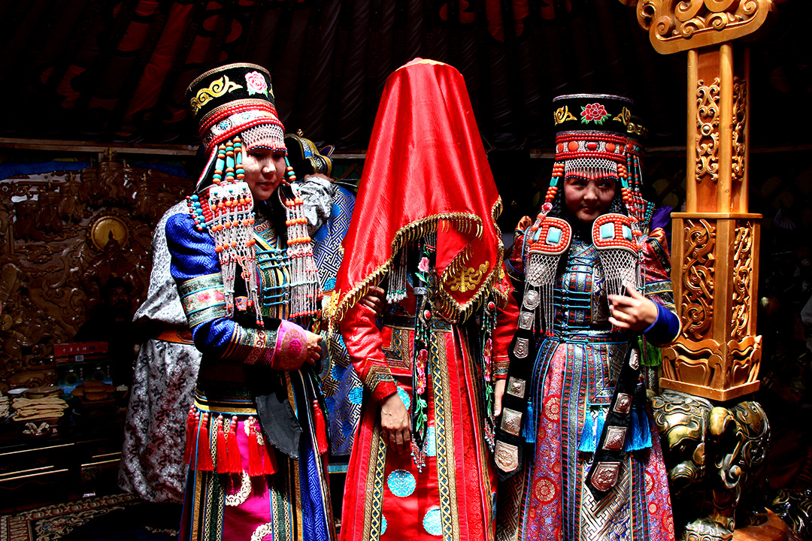
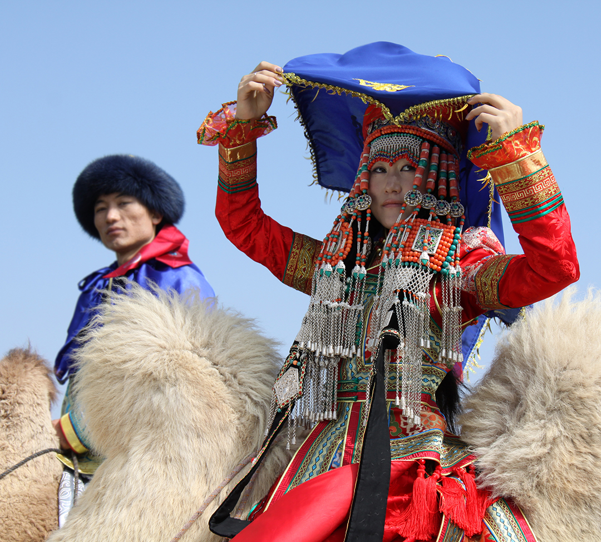
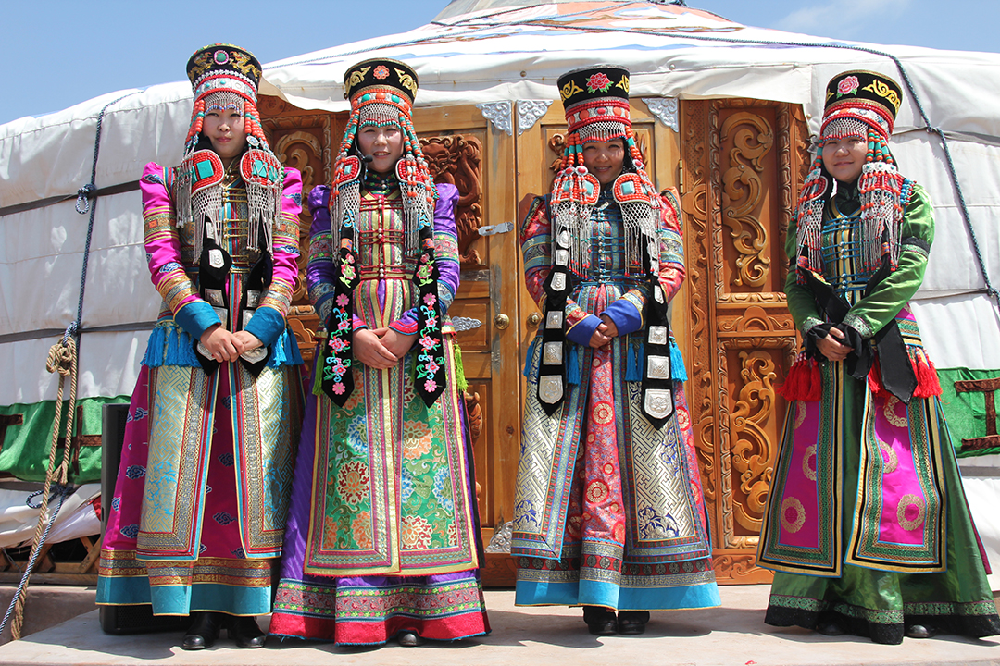
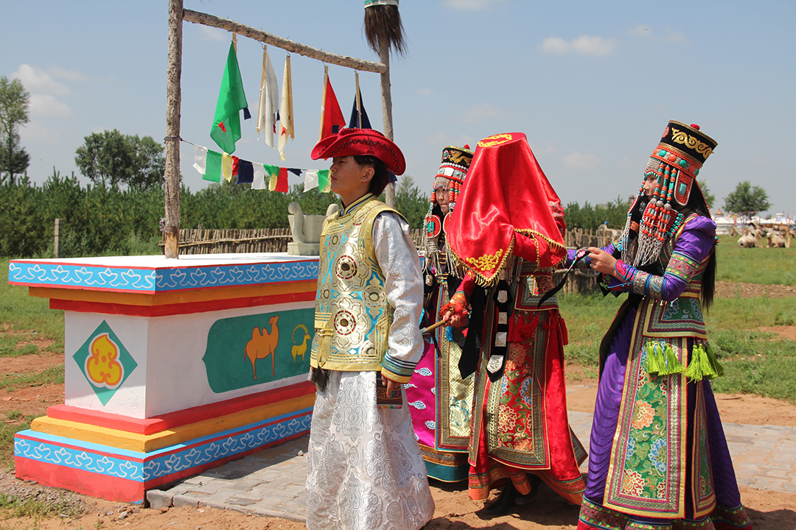
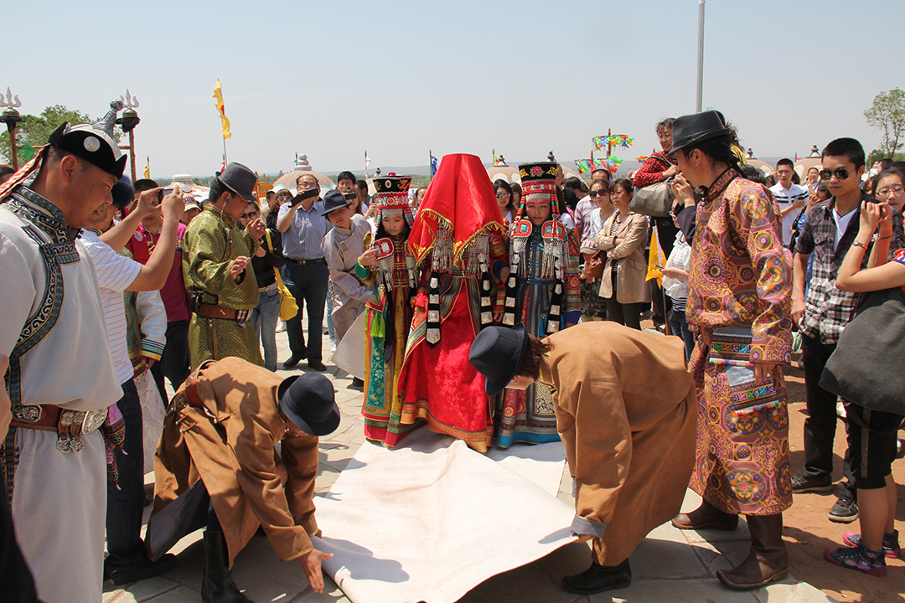
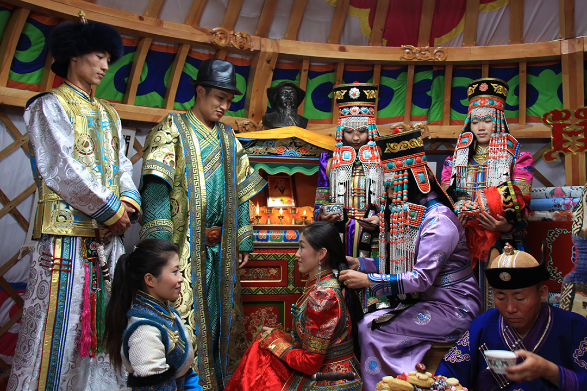

《鄂尔多斯婚礼》实景演艺
鄂尔多斯婚礼是中国第一批非物质文化遗产，苏泊罕大草原旅游景区实现鄂尔多斯婚礼实景演艺，让中国第一批非物质文化遗产走进草原，让民族的精华更加民族化，保护和延续民族文化的传承与发展。
鄂尔多斯婚礼是蒙古族最隆重、最传统、最经典的婚礼，距今已有800余年历史。苏泊罕大草原上演的大型游牧实景演艺《鄂尔多斯婚礼》，保留了13世纪蒙古宫廷婚宴的文化遗存，集婚礼与婚宴、牧民与游客、实景与体验、真实与互动为一体，在玫瑰毡房与激情浪漫的氛围中，为游客带来了丰盛的文化大餐和极为时尚的旅游享受。
乘马娶亲、闭门迎婿、献羊祝酒、求名问庚、女家晚宴、新娘上马、迎新拜灶、放夜送客，三天三夜，八大环节，新郎娶亲如同上沙场作战，装弓备箭，新娘出阁犹如众星捧月，极尽赞誉之词。只见远处，一对迎亲人马浩浩荡荡而来，他们满脸写着喜庆，这是新郎家来迎接新郎和新娘来了。忽然间，新郎的帽子被女方的送亲人抢去了，在辽阔的大草原上，十几个人围追一位新郎，也是一种勇的展示和力的竞技，给婚礼带来不少的情趣和波澜。
实景鄂尔多斯婚礼全名为《大型游牧草原实景演艺<鄂尔多斯婚礼>》，由苏泊罕大草原旅游景区历时一年时间创作完成，是苏泊罕大草原旅游景区的一部文化巨著。该项目共有演员50余名，除由艺术团演员担任主演外，其余近40名演员全部来源于当地土生土长的牧民，原生态本土气息十足。在乘马娶亲和娶亲归来两大环节上，30余匹本地鄂尔多斯蒙古马的娶亲队伍蔚为壮观，是苏泊罕大草原上最亮丽的风景，成为了实景鄂尔多斯婚礼上的最大亮点。
苏泊罕大草原旅游景区实景鄂尔多斯婚礼在传承原有婚礼核心民俗的基础上，以新形式、新格局推陈出新，将游牧民族的婚嫁习俗以自由狂欢的形式从舞台表演回归到生活演艺，以片段点睛，实景演艺了包括拦门迎婿、分发出嫁、新人敬酒等鄂尔多斯婚礼中的必要环节，并适时增设游客互动环节，突出游牧特色，以浓郁的生活气息，热烈的娶亲场面和古老的风格情趣，使游客有参与感与体验感，享受民俗的新鲜和快乐。
鄂尔多斯婚礼发源于古代蒙古，形成于蒙元时期，700多年来一直保留着古老的风格和情趣，原始、淳朴，诗意、浪漫。现实中，一部完整的鄂尔多斯婚礼需历时三天三夜，从新郎配箭娶亲、闭门迎婿到新娘分发出嫁、过门拜灶，处处体现着一个神秘、悠久的马背民族蒙古族浓浓的风俗人情。最古老的蒙古族长调祝颂、最尊贵的敬献全羊术斯、最热闹的求名问庚闹通宵都从蒙元时期原汁原味的保留了下来，是700年的华丽穿越，是一个民族最精华的文化瑰宝。“鄂尔多斯婚礼”最早是在1958年时被鄂尔多斯歌舞剧团以表演式节目搬上舞台，从此走进人们视野，并深受社会各界，尤其是文化和演艺界人士的亲睐，成为了鄂尔多斯文化的代名词，是内蒙古草原的文化名片。
苏泊罕大草原旅游景区实景鄂尔多斯婚礼的成功首演，打破了鄂尔多斯婚礼舞台演艺的传统形式，填补了国内鄂尔多斯婚礼实景演艺的空白，对保护、发扬和传承民族文化具有划时代的意义。是一项空前的突破和跨越。同时，实景鄂尔多斯婚礼演艺项目大量启用原生态牧民演出这一举措，创造了促进牧企和谐发展，建设绿色景区的先河，对国内旅游产业的健康发展尤其是对草原旅游来说，举荐新方向，提出了新思路。
通观一部鄂尔多斯婚礼，就如同通览了蒙古族最优秀的民族精神，切身的感受到蒙古文化和礼俗的博大精深。鄂尔多斯婚礼上，除了新郎以外，祝颂人也是婚礼上的一大亮点。婚礼的祝颂人多才多艺，一路为新郎保驾护航，他机智勇敢、口舌伶俐，眼疾手快，是鄂尔多斯婚礼上一个不得不看的桥段。